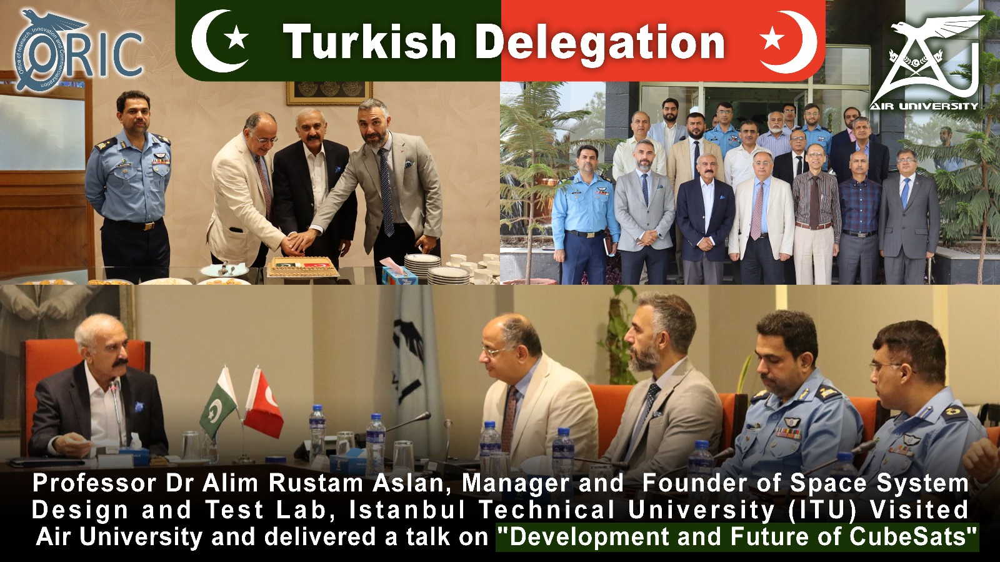
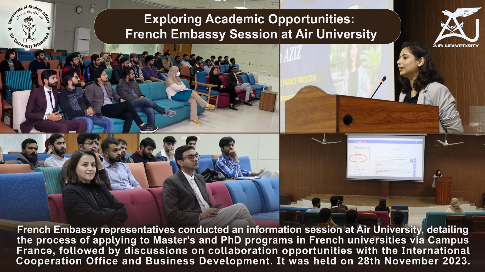
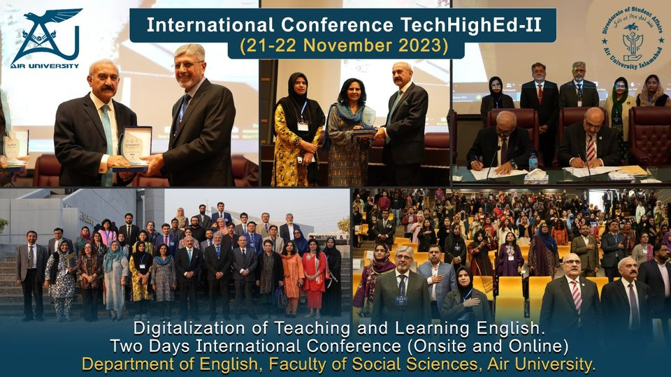
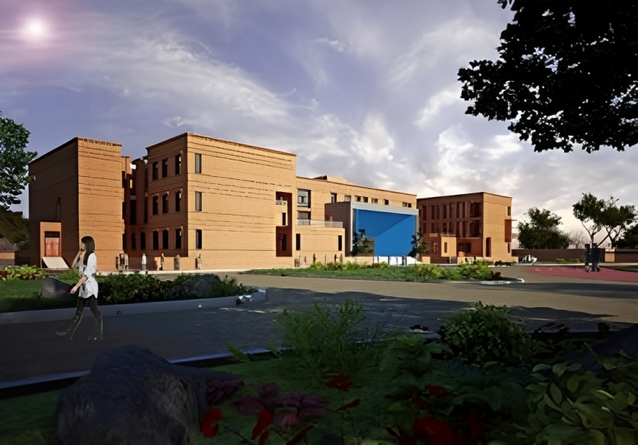
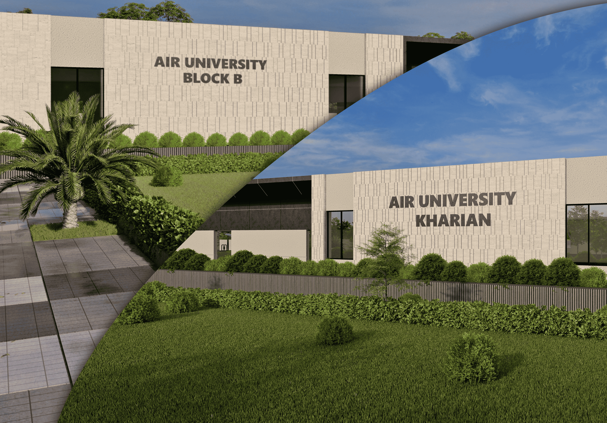
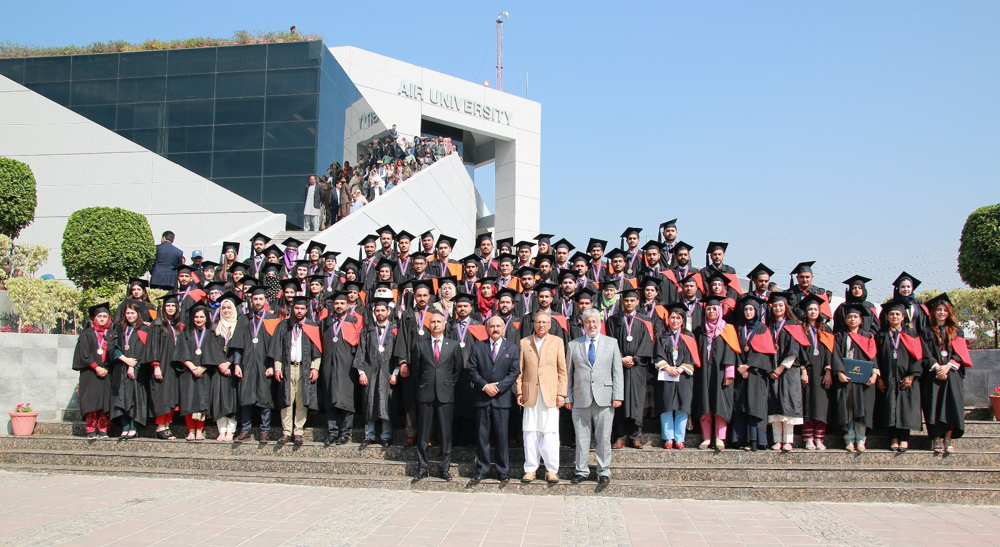
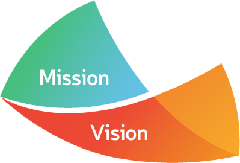

Two years degree program in computer science attracts the participants who are seeking a fast track
entry into the work force, planning to continue to four years degree program, or exploring different
specializations in order to clarify their careers goals. The primary objectives of two years degree
program in computer science are to let the participants learn the theoretical and mathematicalbr
foundations of
computing and scientific principles underlying computing and information technology.
More about ADCS
Campus News
Stories about people, research, Events, and innovation across the Farm



Academics
Preparing students to make meaningful contributions to society
as engaged citizens and leaders in a complex world
Enrolled Students:6552
ADSCS Programme
Students' professional development and foundation building are both facilitated by their
undergraduate education. Our diverse UG programmes turn students into successful people.
Enrolled Students:1219
Masters Programme
Graduate programmes encourage students to be inquisitive and enhance their knowledge and
expertise in specialised sectors. As a result, AU has the most MS-level programmes
available.
Enrolled Students:266
PHD Programme
Thus, the goal of the PhD programmes at AU is to provide information that fuels economic
progress. However, AU sought to produce knowledge for professional development.
More About Academics
Air University Campuses
Building a vibrant community of creative and accomplished people from around the world
Islamabad Campus
The campus is located near the Margalla foothills in the south east corner of sector E-9 (PAF Complex)
of Islamabad. The University is a degree awarding autonomous institution and its graduates are offered
good placement opportunities in the job market.
Attock Campus
The campus is established in close vacinity of Pakistan Aeronautical Complex Attock and will have
linkeges with Aviation Research Inovation and Development (AVRID). Aviation Design Institution
(AVDI) and National Aerospace Science and Technology Park (NASTP)

Multan Campus
In 2011, Air University established its second campus in Multan, Punjab, Pakistan. It offers
undergraduate and postgraduate degree programs in management sciences, accounting and finance,
information technology, mathematics and computer science.

Kharian Campus
Air University has established its new campus at Kharian which will be fully functional from
Spring 2024 Semester. It will initially offer undergraduate programs followed by graduate
programs in different disciplines.
More About Campuses
Research
Driving discoveries vital to our world, our health, and our intellectual life
Offering extraordinary freedom to explore, to collaborate, and to challenge yourself

Explore the possibilities of Air University education as you map out your college journey.
We look for distinctive students who exhibit an abundance of energy and curiosity in their classes, activities, projects, research, and lives.
Air University meets the full financial need of every admitted undergrad who qualifies for assistance.
Nearly 80% of undergrads receive some form of financial assistance. Generally, tuition is covered for families with incomes below PKR.150,000.
More About Admission
About Us
Vission And Mission

Vission:
Air University aspires to be among the leading national universities, excelling in teaching, learning,
research, innovation and public service.
Mission:
The mission of Air University is to achieve excellence in teaching and research for producing graduates with
sound professional knowledge, integrity of character, a keen sense of social responsibility and a passion for lifelong learning.
The University shall stand committed to creating an environment conducive for attracting the best students, faculty and supporting
staff for contributing to the development of a prosperous, peaceful and enlightened society.